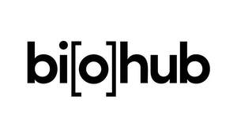

Trade Mark Journal No.2026/007 13 February 2026
UK00004300767 25 November 2025 (9,18,21,25,35,36,41,42,44)

International priority date claimed: 16 June 2025
(Jamaica)
(0095112)
- Class 9
- Downloadable computer software for use in the fields of human biology, biomedical research, biotechnology, bioinformatics, bioengineering, and artificial intelligence; downloadable computer software using artificial intelligence for use in model development and distribution in the fields of human biology, biomedical research, biotechnology, bioinformatics, and bioengineering; downloadable computer software using artificial intelligence for use in machine learning in the fields of human biology, biomedical research, biotechnology, bioinformatics, and bioengineering; downloadable computer software using artificial intelligence for use in biological data processing, generation, understanding and analysis; downloadable software for processing images, graphics and text in the fields of human biology, biomedical research, biotechnology, bioinformatics, bioengineering, and artificial intelligence; downloadable computer software for collecting, analyzing and organizing data in the fields of human biology, biomedical research, biotechnology, bioinformatics, bioengineering, and artificial intelligence.
- Class 18
- Tote bags; umbrellas.
- Class 21
- Water bottles sold empty.
- Class 25
- Clothing for men, women and children, namely, shirts, t-shirts, jackets, tops, and sweat shirts.
- Class 35
- Promoting technical and scientific investigation, research, and experimentation in the fields of human biology, biomedical research, biotechnology, bioinformatics, bioengineering, and artificial intelligence; promoting the exchange of information and resources within the scientific and medical research community and the technology industry to achieve advances in the fields of human biology, biomedical research, biotechnology, bioinformatics, bioengineering, and artificial intelligence; administration and management of research grants; advertising services.
- Class 36
- Financial services, namely, providing grants and funding in the fields of human biology, biomedical research, biotechnology, bioinformatics, bioengineering, and artificial intelligence; funds investment, namely, fund investment services in the fields of human biology, biomedical research, biotechnology, bioinformatics, bioengineering, and artificial intelligence.
- Class 41
- Educational services, namely, organizing and conducting conferences, courses, seminars, and training in the fields of human biology, biomedical research, biotechnology, bioinformatics, bioengineering, and artificial intelligence; educational services, namely, arranging and conducting seminars, workshops, colloquia, lectures, non-downloadable webinars, multimedia presentations and training in the fields of human biology, biomedical research, biotechnology, bioinformatics, bioengineering, and artificial intelligence; providing online databases for educational use purposes in the fields of human biology, biomedical research, biotechnology, bioinformatics, bioengineering, and artificial intelligence; non-downloadable electronic publications, namely, letters, newsletters, articles, news stories, blogs and fact sheets in the fields of human biology, biomedical research, biotechnology, bioinformatics, bioengineering, and artificial intelligence.
- Class 42
- Providing temporary use of on-line non-downloadable software and applications using artificial intelligence (AI) for use in model development and distribution in the fields of human biology, biomedical research, biotechnology, bioinformatics, and bioengineering; software as a service (SAAS) services featuring software using artificial intelligence (AI) for use in model development and distribution in the fields of human biology, biomedical research, biotechnology, bioinformatics, and bioengineering; providing a website featuring non-downloadable software using artificial intelligence (AI) for use in model development and distribution in the fields of human biology, biomedical research, biotechnology, bioinformatics, and bioengineering; platform as a service (PAAS) services featuring software using artificial intelligence (AI) for use in model development and distribution in the fields of human biology, biomedical research, biotechnology, bioinformatics, and bioengineering; artificial intelligence as a service (AIAAS) featuring software using artificial intelligence (AI) for use in model development and distribution in the fields of human biology, biomedical research, biotechnology, bioinformatics, and bioengineering; providing temporary use of on-line non-downloadable software and applications using artificial intelligence (AI) for use in machine learning in the fields of human biology, biomedical research, biotechnology, bioinformatics, and bioengineering; software as a service (SAAS) services featuring software using artificial intelligence (AI) for use in machine learning in the fields of human biology, biomedical research, biotechnology, bioinformatics, and bioengineering; providing a website featuring non-downloadable software using artificial intelligence (AI) for use in machine learning in the fields of human biology, biomedical research, biotechnology, bioinformatics, and bioengineering; platform as a service (PAAS) services featuring software using artificial intelligence (AI) for use in machine learning in the fields of human biology, biomedical research, biotechnology, bioinformatics, and bioengineering; artificial intelligence as a service (AIAAS) featuring software using artificial intelligence (AI) for use in machine learning in the fields of human biology, biomedical research, biotechnology, bioinformatics, and bioengineering; providing temporary use of on-line non-downloadable software and applications using artificial intelligence (AI) for use in biological data processing, generation, understanding and analysis; software as a service (SAAS) services featuring software using artificial intelligence (AI) for use in biological data processing, generation, understanding and analysis; providing a website featuring non-downloadable software using artificial intelligence (AI) for use in biological data processing, generation, understanding and analysis; platform as a service (PAAS) services featuring software using artificial intelligence (AI) for use in biological data processing, generation, understanding and analysis; artificial intelligence as a service (AIAAS) featuring software using artificial intelligence (AI) for use in biological data processing, generation, understanding and analysis; research in the field of artificial intelligence (AI) software; research in the field of artificial intelligence technology; design and development of artificial intelligence (AI) software; development and design of computer software; research, development and design of biomedical technologies and products; design of genetic research tools and systems for others; developing new technology for others in the fields of human biology, biomedical research, biotechnology, bioinformatics, bioengineering, and artificial intelligence; technology services, namely, technological research and development in the fields of human biology, biomedical research, biotechnology, bioinformatics, bioengineering, and artificial intelligence; providing information about human biology, biomedical research, biotechnology, bioinformatics, bioengineering, and artificial intelligence; scientific research; medical research; biomedical research; biotechnology research; scientific laboratory services relating to the isolation and cultivation of human tissues and cells; research and development services in the field of immunology; research and development in the field of microorganisms and cells; scientific research for medical purposes in the area of infectious, cancerous, and neurodegenerative diseases; research in the field of cell engineering technology; consulting services in the fields of human biology, biomedical research, biotechnology, bioinformatics, bioengineering, and artificial intelligence; computer software consulting; consultancy in the field of artificial intelligence (AI) technology.
- Class 44
- Genome sequencing services for scientific and research purposes; providing genetic sequencing and consulting services for medical research purposes; genetic testing for medical research purposes; medical diagnostic testing, monitoring and reporting services for research purposes; providing facilities for human biology, biomedical research, biotechnology, bioinformatics, bioengineering, and artificial intelligence.
Chan Zuckerberg Initiative, LLC
Representative: Bristows LLP